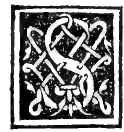
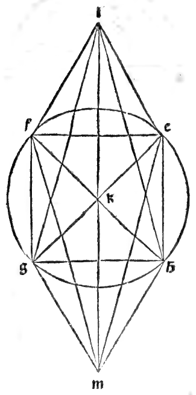
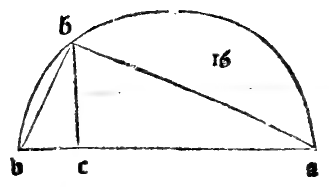
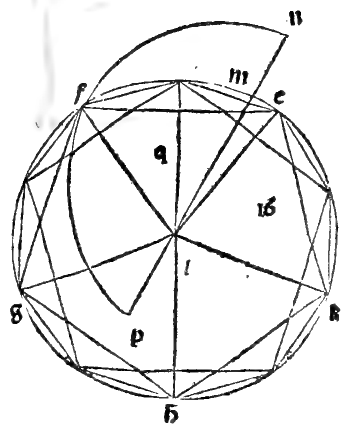
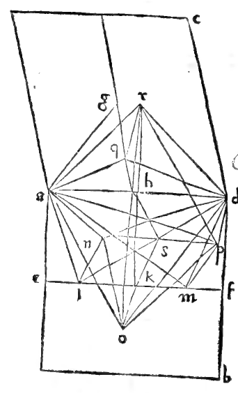

CHAPTER XXIX¶
How the Fourth Regular Body, Called the Ycocedron of Twenty Triangular Bases, Is Formed in the Sphere.

Having constructed the first three regular bodies—whose edges are either commensurable in square with the sphere’s diameter—we now come to the fourth regular body, called the ycocedron, bounded by twenty equilateral triangles meeting five by five at twelve solid angles along thirty equal edges. As promised, its construction requires our Divine Proportion ([XIII.16]).
Construction of the Regular Icosahedron in a Given Sphere ([XIII.16])
Given the diameter of a sphere, to construct the regular body of twenty equilateral triangular bases (ycocedron) inscribed in that sphere, and to demonstrate that the side (edge) of the ycocedron is an irrational line of the fourth species of subtraction, called the Minor (linea menore, [X.76]).
Construction and Proof ([XIII.16], [XIII.9], [XIII.10], [XIII.3], [X.16], [X.76])
Let \(ab\) be the diameter of the given sphere (see the marginal diagram
0034.g1.pngon Folio 0034), and divide \(ab\) at point \(c\) so that \(ac\) is quadruple \(cb\) (\(ac = 4\,cb\), so \(ab = 5\,cb\)).Describe the semicircle \(adb\) upon diameter \(ab\), draw the perpendicular \(cd\) meeting the arc at \(d\), and join \(db\). By the eighth of the sixth, \(ab : cb = ab^{2} : db^{2} = 5 : 1\) and \(ac : cb = cd^{2} : cb^{2} = 4 : 1\), so \(ab^{2} = 5\,db^{2}\) and \(cd = 2\,cb\).
Set out in a plane a circle \(efghk\) whose radius (semidiameter) equals \(db\). Thus the square on the diameter \(ab\) of the sphere is quintuple (\(5 : 1\)) the square on the radius \(db\) of circle \(efghk\).
Inscribe in the circle \(efghk\) the regular pentagon \(efghk\) ([IV.11]) and the regular decagon by bisecting the cinco arcs \(ef, fg, gh, hk, ke\) at their midpoints. Then the side of the hexagon inscribed in circle \(efghk\) equals the radius \(db\) ([IV.15] Corollary).
From the five vertices \(e, f, g, h, k\) of the pentagon, erect five perpendiculars to the plane of the circle ([XI.12]), each of height equal to the radius \(db\) (the side of the hexagon), and join their upper endpoints to form a second parallel regular pentagon rotated by one decagonal arc (\(36^{\circ}\)) relative to the lower pentagon.
Joining the alternating vertices of the upper and lower pentagons gives ten lateral triangles forming a pentagonal antiprism (drum). For each lateral slant edge, its horizontal projection in the circle is the chord of one decagonal arc (\(s_{10}\)), and its vertical rise is the radius (\(s_{6} = db\)). By the penultimate of the first and the tenth of the thirteenth (Chapter XXIV):
\[s_{6}^{2} + s_{10}^{2} = s_{5}^{2}\]Therefore all ten lateral slant edges equal the side \(s_{5}\) of the pentagon \(efghk\), so the middle drum consists of ten equilateral triangles of side \(s_{5}\)!
Now erect the central axis through the centers of the two parallel circles, and extend it above the upper circle and below the lower circle by a segment equal to the side of the decagon (\(s_{10}\)) at each pole. Joining the upper pole to the five vertices of the upper pentagon and the lower pole to the five vertices of the lower pentagon adds five upper and five lower triangles. Because the distance from each pole to the center of its adjacent circle is \(s_{10}\) and the radius of the circle is \(s_{6}\), by [I.47] and [XIII.10] each of the ten polar edges again satisfies \(s_{10}^{2} + s_{6}^{2} = s_{5}^{2}\)!
Thus all thirty edges equal \(s_{5}\), and all twenty faces are equilateral triangles. Moreover, the total length of the axis from pole to pole is the height of the drum (\(s_{6}\)) plus the two polar extensions (\(2\,s_{10}\)):
\[\text{Axis} = s_{6} + 2\,s_{10}\]By the ninth of the thirteenth, \(s_{6} + s_{10}\) is divided in the Divine Proportion with greater segment \(s_{6}\); hence by the third of the thirteenth (Chapter XI), the square on \(s_{6} + \frac{1}{2}s_{6}\)? Nay, by the fourth and eighth of Book XIII, \((s_{6} + 2\,s_{10})^{2} = 5\,s_{6}^{2} = 5\,db^{2} = ab^{2}\)! Therefore the axis from pole to pole equals the sphere’s diameter \(ab\), and all twelve vertices lie on the sphere.
Irrationality of the Edge: If the diameter \(ab\) of the sphere is assumed rational, then since \(ab^{2} = 5\,db^{2}\), the radius \(db\) (\(s_{6}\)) is rational only in square ([X.Def.3]), and by the eleventh of the thirteenth (Chapter XXIII), the side \(s_{5}\) of the pentagon—which is the edge of the ycocedron—is an irrational line called the Minor (linea menore, [X.76]).
Numerical Example
If the diameter of the sphere is \(10\) (so its square is \(100\)), the square on the radius \(db\) of the pentagon’s circle is one-fifth of \(100\), namely \(20\) (\(db = \sqrt{20}\)). By [XIII.11], the edge of the ycocedron is the Minor \(\sqrt{50 - \sqrt{500}}\) (radice universale de 50 men radice de 500).
Marginal Woodcut Diagrams (Paganini 1509)¶

Folio 0034 Diagram 2¶

Folio 0035 Diagram 1¶

Folio 0035 Diagram 2¶

Folio 0036 Diagram 1¶